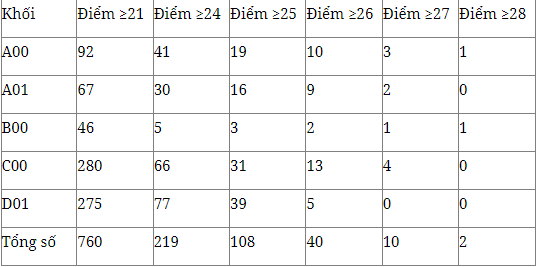

Năm học 2021 – 2022 đối với thầy và trò trường THPT Dương Xá là một năm nhiều cảm xúc.
Cả các em học sinh và các thầy cô giáo tới BGH đều rất lo lắng vì các em là những học sinh chịu nhiều ảnh hưởng từ đại dịch covid – 19. Các thầy cô giáo và các em đã phải nhanh chóng làm quen và thích nghi với phương thức dạy học, kiểm tra đánh giá online còn rất mới. Vượt qua tất cả là trách nhiệm của các thầy cô và sự hiếu học của các em. Năm học đã khép lại từ cuối tháng 5 với các em học sinh lớp 10 và lớp 11 nhưng với các em lớp 12 thì các thầy cô vẫn hồi hộp cùng các em theo dõi, chờ đợi kết quả thi THPT 2022. Đêm 23 rạng sáng ngày 24 tháng 7 năm 2022 là một đêm hồi hộp với nhiều bạn học sinh. Nhiều bạn đã vỡ òa trong hạnh phúc và nhắn tin với các thầy cô ngay trong đêm khi biết kết quả thi của mình.
Trong năm 2022 trường THPT Dương Xá có 581 học sinh tham gia kỳ thi TN THPT được tổ chức tháng 7 năm 2022. Trong đó 580 học sinh lớp 12 của nhà trường và 01 thí sinh tự do đăng ký dự thi Toán, Văn và Tổ hợp KHXH. Kết quả đạt được
581/581 em đỗ tốt nghiệp đạt tỷ lệ 100% . Trong đó có 1052 bài thi đạt điểm giỏi từ 8 điểm trở lên.
Môn Toán có 201/579 học sinh đạt điểm giỏi chiếm tỷ lệ 34,72%. Trong đó bài làm của em Trương Khánh Linh lớp 12A1 đạt điểm cao nhất với 9,8 điểm.
Môn Văn có 207/579 học sinh đạt điểm giỏi chiếm tỷ lệ 35,75%. Trong đó bài làm của em Đào Đức Hường lớp 12A2 và em Nguyễn Thùy Linh lớp 12D3 đạt điểm cao nhất với 9,25 điểm.
Môn Vật lý có 49/152 học sinh đạt điểm giỏi chiếm tỷ lệ 32,24%. Trong đó bài làm của em Lê Thanh Tùng lớp 12A1 đạt điểm cao nhất với 9,5 điểm.
Môn Hóa học có 52/152 học sinh đạt điểm giỏi chiếm tỷ lệ 34,21%. Trong đó bài làm của em Trương Khánh Linh lớp 12A1 và em Lê Thanh Tùng lớp 12A1 đạt điểm cao nhất với 9,5 điểm.
Môn Sinh học có 04/152 học sinh đạt điểm giỏi chiếm tỷ lệ 2,63 %. Trong đó bài làm của em Trương Khánh Linh lớp 12A1 đạt điểm cao nhất với 8,75 điểm.
Môn Lịch sử có 120/427 học sinh đạt điểm giỏi chiếm tỷ lệ 28,10%. Trong đó bài làm của em Nguyễn Hoài Thu lớp 12A1, em Nguyễn Huyền Trang lớp 12A2, em Phạm Tuấn Anh lớp 12A5 và em Nguyễn Thị Kim Anh lớp 12D2 đạt điểm cao nhất với 9,5 điểm.
Môn Địa lý có 87/427 học sinh đạt điểm giỏi chiếm tỷ lệ 20,37%. Trong đó bài làm của em Lưu Hải Nam lớp 12A2, em Nguyễn Minh Hà lớp 12D1 và em Nguyễn Hoàng Khánh Linh lớp 12D1 đạt điểm cao nhất với 9,25 điểm.
Môn GDCD có 372/427 học sinh đạt điểm giỏi chiếm tỷ lệ 87,12%. Trong đó bài làm của em Hoàng Thị Minh Châu lớp 12A5, em Nguyễn Hoàng Khánh Linh lớp 12D1, em Nguyễn Quỳnh Phương lớp 12D2 đạt điểm cao nhất với 10 điểm.
Môn Ngoại ngữ có 91/579 học sinh đạt điểm giỏi chiếm tỷ lệ 15,71%. Trong đó bài làm của em Dương Dương lớp 12A1, em Bạch Hoàng Anh lớp 12D1 và em Cù Huy Phúc Khang lớp 12D6 đạt điểm cao nhất với 9,4 điểm.
Tổng điểm các khối xét tuyển đại học phổ biến như khối A00 (Toán+ Lý + Hóa), khối A01(Toán+ Lý + Anh), khối B00 (Toán + Hóa + Sinh), Khối C00 (Văn + Sử + Địa), C01 (Toán + Lý + Văn), Khối D01(Toán + Văn + Anh),…có kết quả như sau:
Toàn trường có 437/581 em có tổng 3 môn theo khối xét tuyển đại học ≥21 điểm chiếm tỷ lệ 75,34%
154/580 em có tổng 3 môn theo khối xét tuyển đại học ≥24 điểm chiếm tỷ lệ 26,55%
84/580 em có tổng 3 môn theo khối xét tuyển đại học ≥25 điểm chiếm tỷ lệ 14,48%
34/580 em có tổng 3 môn theo khối xét tuyển đại học ≥26 điểm chiếm tỷ lệ 5,86%
10/580 em có tổng 3 môn theo khối xét tuyển đại học ≥27 điểm chiếm tỷ lệ 1,72%
02/580 em có tổng 3 môn theo khối xét tuyển đại học ≥28 điểm chiếm tỷ lệ 0,34%
Một số học sinh tiêu biểu đạt điểm thi cao trong các khối thi như:
Em Trương Khánh Linh lớp 12A1 là thủ khoa khối B00(Toán+ Hóa +Sinh) được 28,05 điểm với Toán 9,8, Hóa học 9,5, Sinh học 8,75 ; là thủ khoa khối D07(Toán+ Hóa +Anh) được 28,1 điểm với Toán 9,8, Hóa học 9,5, Ngoại ngữ 8,8 điểm và thủ khoa khối D00(Toán +Văn + Anh) được 26,6 điểm với Toán 9,8, Văn 8,0, Ngoại ngữ 8,8 điểm
Em Lê Thanh Tùng lớp 12A1 là thủ khoa khối A00 (Toán+ Lý+ Hóa) được 28 điểm với Toán 9 điểm, Vật lý 9 điểm và Hóa học 9 điểm.
Em Dương Đức Khoa 12A1 là thủ khoa khối A01 (Toán+ Lý+ Anh) được 27,15 điểm với Toán 9,6 điểm, Vật lý 8,75 điểm và Ngoại ngữ 8,8 điểm
Em Nguyễn Thị Kim Anh 12D2 là thủ khoa khối C00 (Văn + Sử + Địa) được 27,5 điểm với Văn 9 điểm, Lịch sử 9,5 điểm và Địa 9 điểm
Với truyền thống hiếu học của nhà trường, thầy và trò trường THPT Dương Xá sẽ tiếp cục cố gắng nâng cao chất lượng dạy và học để tiếp tục đạt được những kết quả cao hơn nữa trong những năm học tiếp theo, góp phần phát triển giáo dục Thủ đô.